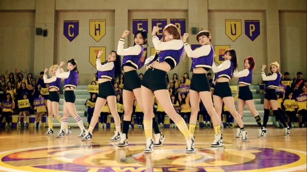

• Cheer Up •
 Lançamento: 24/04/2016Stages


Tracklist
-
Cheer Up
x
01/Cheer Up
Lyrics by Sam Lewis • Composed by alguem • Arranged by alguem • Sessieon All instruments by alguem • Computer programming by alguem • Background vocals by jihyo at TWICE • Recorded by alguem "goodear", alguem at JYPE Studios • Recording assisted by alguem at JYPE Studios • Mixed by alguem at JYPE Studios • Mixing assisted by alguem at JYPE Studios매일 울리는 벨, 벨, 벨
이젠 나를 배려 해줘
배터리 낭비하긴 싫어
자꾸만 봐, 자꾸, 자꾸만 와
전화가 펑 터질 것만 같아
몰라, 몰라 숨도 못 쉰대
나 때문에 힘들어 (쿵)
심장이 떨어진대
왜 걔 말은 나 너무 예쁘대?
자랑 하는 건 아니구
아, 아까는 못 받아서 미안해 (우)
친구를 만나느라, shy, shy, shy (shy)
만나긴 좀 그렇구, 미안해 (우)
좀 있다 연락할 게 later
조르지 마, 얼마 가지 않아
부르게 해줄게, baby
아직은 좀 일러, 내 맘 갖긴 일러
하지만 더 보여줄래
Cheer up, baby
Cheer up, baby, 좀 더 힘을 내
여자가 쉽게 맘을 주면 안 돼
그래야 네가 날 더 좋아하게 될걸
태연하게 연기할래 아무렇지 않게
내가 널 좋아하는 맘 모르게
Just get it together
And then baby, cheer up (I need you)
아, 답장을 못 해줘서 미안해 (우)
친구를 만나느라, shy, shy, shy (shy)
만나긴 좀 그렇구, 미안해 (우)
좀 있다 연락할 게 later
조르지 마, 어디 가지 않아
되어줄 게 너의, baby
너무 빨린 싫어, 성의를 더 보여
내가 널 기다려줄 게
안절부절 목소리가 여기까지 들려
땀에 젖은 전화기가 여기서도 보여
바로바로 대답하는 것도 매력 없어
메시지만 읽고 확인 안 하는 건 기본
(오오오) 너무 심했나, boy
이러다가 지칠까 봐 걱정되긴 하고
(오오오) 안 그러면, 내가 더
빠질 것만 같어, 빠질 것만 같어
Cheer up, baby
Cheer up, baby, 좀 더 힘을 내
여자가 쉽게 맘을 주면 안 돼
그래야 네가 날 더 좋아하게 될걸
태연하게 연기할래 아무렇지 않게
내가 널 좋아하는 맘 모르게
Just get it together
And then baby, cheer up
나도 네가 좋아, 상처 입을까 봐
걱정되지만, 여자니까 이해해주길
속마음 들킬까 봐 겁이 나
지금처럼 조금만 더 다가와
그리 오래 걸리진 않아
Just get it together
And then baby, cheer up
Be a man (yeah) a real man (yeah)
Gotta see you love me like a real man (oh, oh)
Be a man (yeah) a real man (yeah)
Gotta see you love me like a real man
Cheer up, baby (oh)
Cheer up, baby, 좀 더 힘을 내
여자가 쉽게 맘을 주면 안 돼
그래야 네가 날 더 좋아하게 될걸
태연하게 연기할래 아무렇지 않게
내가 널 좋아하는 맘 모르게
Just get it together
And then baby, cheer up - Precious Love
- Touchdown
- Tuk Tok
- Woohoo
- My Headphones On
- I'm Gonna Be A Star* (Bonus Track)